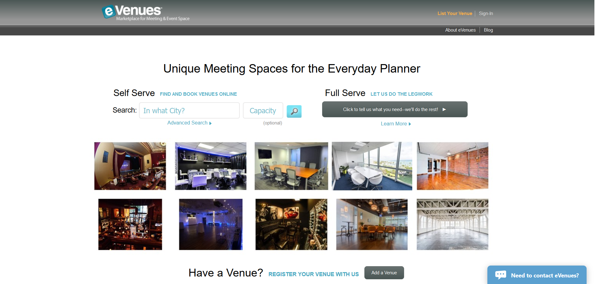

eVenues User Experience Internship
Specs
Founded in 2008, eVenues is an online public marketplace for booking meeting and event space. My role as an intern during Summer 2017 was to move the product towards a 2.0 site relaunch. Being a lightweight startup, I took on a variety of research, design, and product management tasks depending on the week.
Research Questions
Before jumping into design, I decided I needed to better understand the users and current problems with the website. I did this by conducting a competitive analysis, survey, and interviews.
These questions helped guide my work:
- How could eVenues rebrand itself and differentiate itself from competiting services?
- How could we build a more usable platform for venues to publish more listings?
- How could an outdated Information Architecture be simplified?
- What design recomendations could improve the overrall user experience and customer funnel?
Competitive Analysis
The competitive analysis included 4 direct competitiors and 5 indirect competitors. I evaluated user flows and UI patterns from each. Above is a quick napkin sketch of how the competition's user flows varied. Despite having similar designs, every competitior had a slightly different way of connecting users.
Interviews, Surveys, and Personas
While eVenues has two primary users: venues and customers, I primarily focused on enhancing the venue experience. To understand the needs of venues I administered a survey and conducted two informal interviews with venues. While many of the competiting companies focused on a certain type of customer such as the profesional meeting planner or a Silicon Valley techie, eVenues has a much more general audience. That comes with much more diverse venue owners listing their spaces. We have churches to castles posting spaces on the site. The two venues interviewed were very different so I created two personas to help us think about the variety of venues. The bottom line is that venues want more leads because more leads, equals more revenue.
Information Architecture
While testing the website it became clear that the information architecture was outdated. Some features (Full Serve) didn't work anymore but were left on the frontpage. Other problems with how help and venue sign-up pages are setup were incredibly clumsy to navigate through. For the relaunch, the entire site needed to be flattened and simplified. After analyzing every page on the site, and considering competiting websites I was able to create a new site map for the revamped website.
Each screen is categorized by Page, Index, Form, or Email. The about section is flattened as well as the "List Your Venue" flow. I included the lead flow email screens in the site map since a lot of the lead flow communication happens in email.
Wireframes
After conducting research and gathering feedback from venues, I began sketching and wire-framing updated layouts for pages.
The old landing page had outdated features, a random selection of venues, and a busy layout.
This wireframe was meant to communicate a clear call to action on the landing page. A personalized and accurate search option could give customers meaningful results.
The current venue page layout.
My wireframe explores adding features such as a favorites list, venue response rates, and more spacing to seperate information hierarchy.
Lastly, map based search is part of the current eVenues system but it is not a main feature. A user could easily overlook it in on the search results page. This is a look at how a prominent map-based search could look for eVenues.
eVenues.com Research, Design, Product Management Adobe XD, Google Sheets
Reflection
I learned a lot about e-commerce, startups, and the hospitality industry throughout this internship. In addition to the research, site map, and wireframes seen here, I delivered a list of final design recommendations for the design and development team to continue iterating on. While much of my work isn't live on the site yet, it helped lay the framework for the new user experience the site will deploy.
Back to Previous Page Next Project